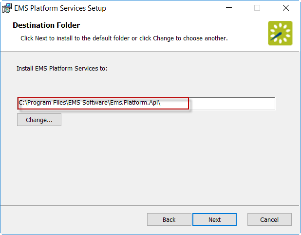
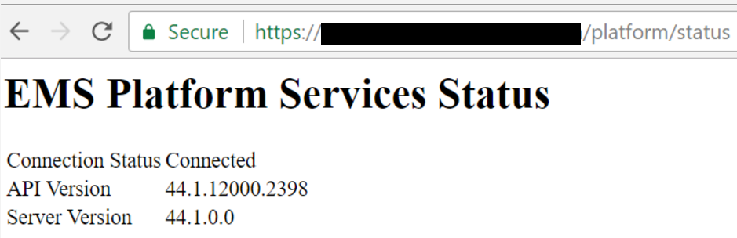

Install EMS Platform Services
This topic provides information on the following:
-
Install Platform Services
-
Verify Installation Status
Install Platform Services
- Verify the see System Requirements.
- Install the see Prerequisites.
- The EMS Platform Services installation files can be downloaded from the online Support Center. Enter your Email Address and Password to log in to the Support Center.
Note: HTTPPlatformHandler is a prerequisite and if not installed prior to installing Platform Services, a server reboot may be required.
- Navigate to the Software & Docs Library > Software Downloads > Releases & Patches.
- Download EMSPlatformServices.msi. (Required for all installations.)
- The EMS Platform Services Setup Wizard will appear. Click Next to begin installation.

- Choose a default folder to install EMS Platform Services to. The Platform installer by default will try to install in Programs folder, you can change the path to wwwroot folder. The typical install path is C:\Program Files/EMS Software/Ems.Platform.Api\. Click Next.
- You will need to enter the SQL server and EMS database, configured to allow external connections. Make a note of the database name.
- Enter a Virtual Directory Name.
- To enable NTLM authentication for Everyday User Authentication for the Platform Services Admin Portal and Integration Clients, click the Enable NTLM For EMS Everyday User Authentication box.
- Click the Install button to complete the installation. You will receive a prompt from the Wizard that installation is complete. EMS Platform Services is now installed on your Web server.
- Click Finish.
Verify Installation Status
- Access your URL for Platform Services (e.g., https://yourcompany.com/ems-platform-api).
- Verify the status of your installation by navigating to https://yourcompany.com/ems-platform-api/status.
